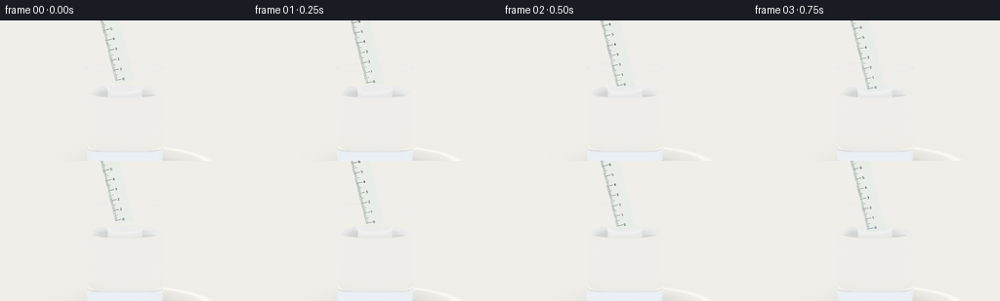
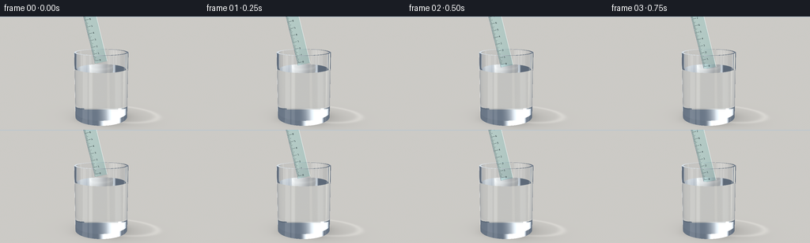
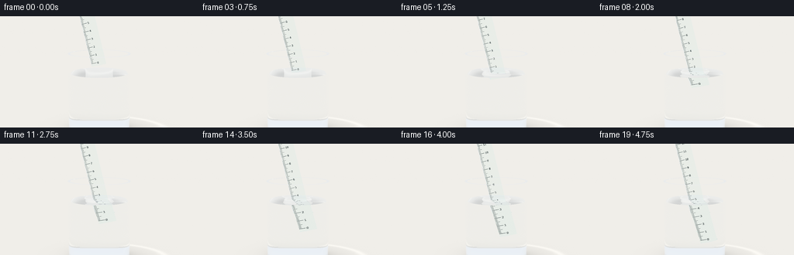
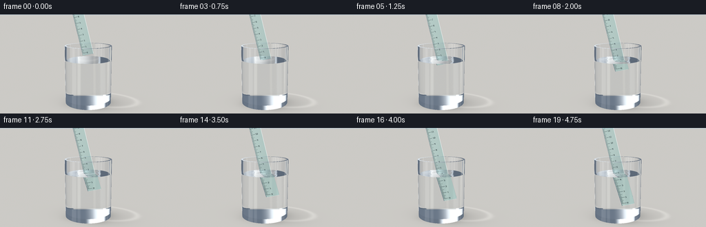

CODING AGENTS AS PIXEL WORLD MODELS
traex/GPT-6.1-Sol · phygen_075
点击播放 · 原生 RGB 像素
逐轮保存的候选
回放视频、检查图与代码变化。
每份候选均可单独播放。实际图片检查记录在下方工具轨迹中。
候选 01播放与检查图
点击播放 · 原生 RGB 像素


展开代码变化
--- 上一保存版本
+++ 本次保存版本
@@ -0,0 +1,208 @@
+"""Analytic optical rendering of a slowly submerged translucent plastic ruler.
+Only numpy/Pillow; finite-cylinder and slab intersections and Snell refraction.
+"""
+import numpy as np
+from PIL import Image, ImageDraw, ImageFont
+from pathlib import Path
+import artifact_io
+
+ROOT=Path(__file__).resolve().parent
+W,H=768,432
+DT=np.float32
+EPS=0.00012
+R,RI=.70,.645
+BASE,INNER,FULL,WATER=.035,.155,1.79,1.365
+U=np.array([-.25,.9682458,0],DT)
+V=np.array([.9682458,.25,0],DT)
+LENGTH,WIDTH,THICK=2.48,.34,.025
+CAM=np.array([2.3,2.68,6.8],DT)
+TARGET=np.array([0,1.37,0],DT)
+F=TARGET-CAM; F/=np.linalg.norm(F)
+RIGHT=np.cross(F,[0,1,0]); RIGHT/=np.linalg.norm(RIGHT)
+UP=np.cross(RIGHT,F)
+xx,yy=np.meshgrid((np.arange(W)+.5-W/2)/(W/2),(H/2-np.arange(H)-.5)/(W/2))
+D=F+xx[...,None]*np.tan(np.deg2rad(17))*RIGHT+yy[...,None]*np.tan(np.deg2rad(17))*UP
+D=D.reshape(-1,3).astype(DT);D/=np.linalg.norm(D,axis=1)[:,None]
+
+# Actual scale is drawn on the face of the molded translucent plastic.
+TW,TH=340,2480
+tex=Image.new('L',(TW,TH),0);draw=ImageDraw.Draw(tex)
+try: font=ImageFont.truetype('/usr/share/fonts/truetype/dejavu/DejaVuSans.ttf',58)
+except: font=ImageFont.load_default()
+for k in range(126):
+ y=TH-70-k*18
+ if y<40:continue
+ size=125 if k%10==0 else 83 if k%5==0 else 48
+ draw.line((7,y,size,y),fill=240,width=5 if k%10==0 else 3)
+ if k%10==0: draw.text((143,y-29),str(k//10),font=font,fill=235)
+draw.text((155,55),'cm',font=font,fill=230)
+TEX=np.asarray(tex,dtype=DT)/255
+
+
+def env(d):
+ # Broad studio illumination, with a window on the left and a softbox right.
+ sky=np.clip(d[:,1]*.45+.55,0,1)
+ out=np.stack([.66+.25*sky,.70+.24*sky,.73+.25*sky],axis=1)
+ left=(np.abs(d[:,0]+.76)<.125)&(d[:,2]>.15)&(d[:,1]>-.4)&(d[:,1]<.85)
+ # Two bright vertical reflectors create recognizable tumbler highlights.
+ val=np.exp(-((d[:,0]-.72)/.065)**8)*np.exp(-((d[:,1]-.2)/.75)**8)
+ out=out*(1-val[:,None]*.65)+np.array([1.4,1.36,1.22])*val[:,None]*.65
+ out[left]=[1.35,1.39,1.43]
+ return out
+
+
+def background(o,d):
+ n=len(o); out=np.empty((n,3),DT)
+ den=np.where(np.abs(d[:,1])<1e-9,1e-9,d[:,1]);t=-o[:,1]/den
+ ground=(d[:,1]<-.00001)&(t>0)
+ # Seamless pale neutral studio, no distracting objects.
+ sy=np.clip(.6+d[:,1]*1.3,0,1)
+ out[:]=np.stack([.73+.12*sy,.77+.10*sy,.78+.10*sy],axis=1)
+ if np.any(ground):
+ p=o[ground]+d[ground]*t[ground,None]
+ x,z=p[:,0],p[:,2]
+ # Soft contact shadow and defocused transmitted-light caustic.
+ shadow=.18*np.exp(-((x-.20)/.85)**2-((z+.12)/.64)**2)
+ shadow+=.12*np.exp(-(x/.63)**4-(z/.52)**4)
+ caustic=.09*np.exp(-((np.sqrt(((x-.40)/1.05)**2+((z+.45)/.65)**2)-1)/.10)**2)
+ grain=.002*(np.sin(x*210+z*87)+np.sin(x*74-z*290))
+ shade=.88-shadow+caustic+grain
+ out[ground]=shade[:,None]*np.array([1.0,.985,.947])
+ return out
+
+
+def ruler_local(p,bottom):
+ q=p-bottom
+ return np.stack([q@V,q@U,q[:,2]],axis=1)
+
+
+def medium(p,bottom):
+ r2=p[:,0]**2+p[:,2]**2
+ glass=(r2<R*R)&(p[:,1]>BASE)&(p[:,1]<FULL)&((r2>RI*RI)|(p[:,1]<INNER))
+ water=(r2<RI*RI)&(p[:,1]>INNER)&(p[:,1]<WATER)
+ m=np.zeros(len(p),np.int8);m[glass]=1;m[water]=2
+ q=ruler_local(p,bottom)
+ plastic=(np.abs(q[:,0])<WIDTH/2)&(q[:,1]>0)&(q[:,1]<LENGTH)&(np.abs(q[:,2])<THICK/2)
+ m[plastic]=3
+ return m
+
+
+def intersect(o,d,bottom):
+ n=len(o); best=np.full(n,np.inf,DT);norm=np.zeros_like(o);kind=np.zeros(n,np.int8)
+ def put(t,no,valid,k):
+ mask=valid&(t>EPS)&(t<best)
+ best[mask]=t[mask]
+ norm[mask]=no[mask] if np.ndim(no)>1 else no
+ kind[mask]=k
+ a=d[:,0]**2+d[:,2]**2
+ b=o[:,0]*d[:,0]+o[:,2]*d[:,2]
+ for radius,lo,hi in [(R,BASE,FULL),(RI,INNER,FULL)]:
+ c=o[:,0]**2+o[:,2]**2-radius*radius
+ disc=b*b-a*c;s=np.sqrt(np.maximum(0,disc))
+ for sign in [-1,1]:
+ t=(-b+sign*s)/np.maximum(a,1e-12)
+ p=o+d*t[:,None]
+ no=np.stack([p[:,0]/radius,np.zeros(n),p[:,2]/radius],axis=1)
+ put(t,no,(disc>=0)&(p[:,1]>=lo)&(p[:,1]<=hi),1)
+ for y,rmin,rmax,k in [(BASE,0,R,1),(INNER,0,RI,1),(FULL,RI,R,1),(WATER,0,RI,2)]:
+ den=np.where(np.abs(d[:,1])<1e-10,1e-10,d[:,1]);t=(y-o[:,1])/den
+ p=o+d*t[:,None];r2=p[:,0]**2+p[:,2]**2
+ no=np.tile(np.array([0,1,0],DT),(n,1))
+ put(t,no,(r2>=rmin*rmin)&(r2<=rmax*rmax),k)
+ # Six faces of the transparent ruler.
+ q=ruler_local(o,bottom)
+ v=np.stack([d@V,d@U,d[:,2]],axis=1)
+ low=[-WIDTH/2,0,-THICK/2];high=[WIDTH/2,LENGTH,THICK/2]
+ for axis in range(3):
+ for side in [low[axis],high[axis]]:
+ den=np.where(np.abs(v[:,axis])<1e-10,1e-10,v[:,axis]);t=(side-q[:,axis])/den
+ p=q+v*t[:,None]
+ valid=np.ones(n,bool)
+ for j in range(3):
+ if j!=axis:valid&=(p[:,j]>=low[j])&(p[:,j]<=high[j])
+ no=[V,U,np.array([0,0,1],DT)][axis]
+ put(t,no,valid,3 if axis==2 else 4)
+ return best,norm,kind
+
+
+def render(frame):
+ f=frame/19
+ # Nearly uniform descent, with a soft stop at the end.
+ motion=(np.sin((f-.5)*np.pi)*.5+.5)*.2+f*.8
+ bottom=np.array([.012+.277*motion,1.53-1.073*motion,.045],DT)
+ o=np.tile(CAM,(len(D),1));d=D.copy()
+ weight=np.ones_like(o);color=np.zeros_like(o)
+ active=np.arange(len(d))
+ ior=np.array([1.,1.515,1.333,1.49],DT)
+ absorb=np.array([[0,0,0],[.010,.005,.002],[.012,.004,.002],[2.3,.23,.48]],DT)
+ for depth in range(14):
+ if len(active)==0:break
+ t,n,k=intersect(o,d,bottom)
+ miss=~np.isfinite(t)
+ if np.any(miss):color[active[miss]]+=weight[miss]*background(o[miss],d[miss])
+ keep=~miss
+ active=active[keep];o=o[keep];d=d[keep];weight=weight[keep];t=t[keep];n=n[keep];k=k[keep]
+ if len(active)==0:break
+ p=o+d*t[:,None]
+ m1=medium(o,bottom)
+ weight*=np.exp(-absorb[m1]*t[:,None])
+ # Printing on either face is seen through the clear plastic.
+ printed=np.zeros(len(p),DT)
+ mask=k==3
+ if np.any(mask):
+ q=ruler_local(p[mask],bottom)
+ tx=np.clip(((q[:,0]/WIDTH+.5)*(TW-1)).astype(int),0,TW-1)
+ ty=np.clip(((1-q[:,1]/LENGTH)*(TH-1)).astype(int),0,TH-1)
+ printed[mask]=TEX[ty,tx]
+ if np.any(printed>0):
+ ink=np.array([.045,.072,.077],DT)
+ color[active]+=weight*ink*printed[:,None]
+ weight*=1-printed[:,None]*.96
+ m2=medium(p+d*(EPS*2),bottom)
+ # Water's disturbed surface has gentle normals around the insertion point.
+ watermask=k==2
+ if np.any(watermask):
+ pp=p[watermask]
+ cx=bottom[0]+U[0]*(WATER-bottom[1])/U[1]
+ dx,dz=pp[:,0]-cx,pp[:,2]-bottom[2]
+ rr=np.sqrt(dx*dx+dz*dz)+1e-5
+ submerged=max(0,WATER-bottom[1])
+ strength=.006*(1-np.exp(-submerged*18))*(.9-.30*motion)
+ derivative=strength*(19*np.cos(rr*19-frame*.8)-2*np.sin(rr*19-frame*.8))*np.exp(-2*rr)
+ n[watermask,0]=-derivative*dx/rr
+ n[watermask,2]=-derivative*dz/rr
+ n[watermask]/=np.linalg.norm(n[watermask],axis=1)[:,None]
+ facing=np.sum(d*n,axis=1)>0;n[facing]*=-1
+ ci=np.clip(-np.sum(d*n,axis=1),0,1)
+ eta=ior[m1]/ior[m2];discr=1-eta*eta*(1-ci*ci)
+ f0=((ior[m1]-ior[m2])/(ior[m1]+ior[m2]))**2
+ fres=f0+(1-f0)*(1-ci)**5
+ fres[m1==m2]=0
+ tir=discr<0;fres[tir]=1
+ reflect=d+2*ci[:,None]*n
+ # Environment reflection is evaluated with a real tabletop for lower rays.
+ reflected=background(p+reflect*EPS*2,reflect)
+ sky=reflect[:,1]>0
+ reflected[sky]=env(reflect[sky])
+ color[active]+=weight*fres[:,None]*reflected
+ weight*=1-fres[:,None]
+ d=eta[:,None]*d+(eta*ci-np.sqrt(np.maximum(discr,0)))[:,None]*n
+ d[tir]=reflect[tir]
+ # TIR is accounted above; discard its negligible interior remainder.
+ d/=np.maximum(np.linalg.norm(d,axis=1),1e-10)[:,None]
+ o=p+d*EPS*2
+ good=np.max(weight,axis=1)>.001
+ active=active[good];o=o[good];d=d[good];weight=weight[good]
+ if len(active):color[active]+=weight*background(o,d)
+ # Photographic tonality and very fine static sensor grain.
+ color=np.clip(color,0,1.25)
+ color=color**(1/1.9)
+ color=np.clip(color*1.035-.027,0,1)
+ image=Image.fromarray((color.reshape(H,W,3)*255+.5).astype(np.uint8))
+ return np.asarray(image.resize((256,144),Image.Resampling.LANCZOS))
+
+if __name__=='__main__':
+ frames=[]
+ for i in range(20):
+ frames.append(render(i));print(f'Rendered {i+1}/20',flush=True)
+ artifact_io.save(np.stack(frames).astype(np.uint8),ROOT)
候选 02播放与检查图
点击播放 · 原生 RGB 像素


展开代码变化
--- 上一保存版本
+++ 本次保存版本
@@ -16,12 +16,12 @@
V=np.array([.9682458,.25,0],DT)
LENGTH,WIDTH,THICK=2.48,.34,.025
CAM=np.array([2.3,2.68,6.8],DT)
-TARGET=np.array([0,1.37,0],DT)
+TARGET=np.array([0,1.23,0],DT)
F=TARGET-CAM; F/=np.linalg.norm(F)
RIGHT=np.cross(F,[0,1,0]); RIGHT/=np.linalg.norm(RIGHT)
UP=np.cross(RIGHT,F)
xx,yy=np.meshgrid((np.arange(W)+.5-W/2)/(W/2),(H/2-np.arange(H)-.5)/(W/2))
-D=F+xx[...,None]*np.tan(np.deg2rad(17))*RIGHT+yy[...,None]*np.tan(np.deg2rad(17))*UP
+D=F+xx[...,None]*np.tan(np.deg2rad(20))*RIGHT+yy[...,None]*np.tan(np.deg2rad(20))*UP
D=D.reshape(-1,3).astype(DT);D/=np.linalg.norm(D,axis=1)[:,None]
# Actual scale is drawn on the face of the molded translucent plastic.
@@ -42,7 +42,9 @@
def env(d):
# Broad studio illumination, with a window on the left and a softbox right.
sky=np.clip(d[:,1]*.45+.55,0,1)
- out=np.stack([.66+.25*sky,.70+.24*sky,.73+.25*sky],axis=1)
+ out=np.stack([.10+.14*sky,.13+.16*sky,.17+.19*sky],axis=1)
+ soft=np.exp(-((d[:,0]+.43)/.12)**6)*np.exp(-((d[:,1]-.12)/.82)**8)
+ out=out*(1-soft[:,None]) + np.array([1.25,1.32,1.37])*soft[:,None]
left=(np.abs(d[:,0]+.76)<.125)&(d[:,2]>.15)&(d[:,1]>-.4)&(d[:,1]<.85)
# Two bright vertical reflectors create recognizable tumbler highlights.
val=np.exp(-((d[:,0]-.72)/.065)**8)*np.exp(-((d[:,1]-.2)/.75)**8)
@@ -57,7 +59,7 @@
ground=(d[:,1]<-.00001)&(t>0)
# Seamless pale neutral studio, no distracting objects.
sy=np.clip(.6+d[:,1]*1.3,0,1)
- out[:]=np.stack([.73+.12*sy,.77+.10*sy,.78+.10*sy],axis=1)
+ out[:]=np.stack([.45+.19*sy,.52+.17*sy,.57+.16*sy],axis=1)
if np.any(ground):
p=o[ground]+d[ground]*t[ground,None]
x,z=p[:,0],p[:,2]
@@ -66,7 +68,7 @@
shadow+=.12*np.exp(-(x/.63)**4-(z/.52)**4)
caustic=.09*np.exp(-((np.sqrt(((x-.40)/1.05)**2+((z+.45)/.65)**2)-1)/.10)**2)
grain=.002*(np.sin(x*210+z*87)+np.sin(x*74-z*290))
- shade=.88-shadow+caustic+grain
+ shade=.65-shadow+caustic+grain
out[ground]=shade[:,None]*np.array([1.0,.985,.947])
return out
@@ -134,7 +136,7 @@
weight=np.ones_like(o);color=np.zeros_like(o)
active=np.arange(len(d))
ior=np.array([1.,1.515,1.333,1.49],DT)
- absorb=np.array([[0,0,0],[.010,.005,.002],[.012,.004,.002],[2.3,.23,.48]],DT)
+ absorb=np.array([[0,0,0],[.010,.005,.002],[.012,.004,.002],[10.0,.60,1.25]],DT)
for depth in range(14):
if len(active)==0:break
t,n,k=intersect(o,d,bottom)
@@ -181,9 +183,7 @@
tir=discr<0;fres[tir]=1
reflect=d+2*ci[:,None]*n
# Environment reflection is evaluated with a real tabletop for lower rays.
- reflected=background(p+reflect*EPS*2,reflect)
- sky=reflect[:,1]>0
- reflected[sky]=env(reflect[sky])
+ reflected=env(reflect)
color[active]+=weight*fres[:,None]*reflected
weight*=1-fres[:,None]
d=eta[:,None]*d+(eta*ci-np.sqrt(np.maximum(discr,0)))[:,None]*n
可观测工具轨迹
实际执行的命令与返回图片。
命令 1exit 0
/bin/bash -lc 'ls -la; cat prompt.txt; cat GENERATION_RULES.md; cat task_spec.json'
命令 2exit 0
/bin/bash -lc "cat artifact_io.py; python - <<'PY' import numpy,PIL print(numpy.__version__) PY"
命令 3exit 0
/bin/bash -lc "cat > generate.py <<'PY'
\"\"\"Analytic optical rendering of a slowly submerged translucent plastic ruler.
Only numpy/Pillow; finite-cylinder and slab intersections and Snell refraction.
\"\"\"
import numpy as np
from PIL import Image, ImageDraw, ImageFont
from pathlib import Path
import artifact_io
ROOT=Path(__file__).resolve().parent
W,H=768,432
DT=np.float32
EPS=0.00012
R,RI=.70,.645
BASE,INNER,FULL,WATER=.035,.155,1.79,1.365
U=np.array([-.25,.9682458,0],DT)
V=np.array([.9682458,.25,0],DT)
LENGTH,WIDTH,THICK=2.48,.34,.025
CAM=np.array([2.3,2.68,6.8],DT)
TARGET=np.array([0,1.37,0],DT)
F=TARGET-CAM; F/=np.linalg.norm(F)
RIGHT=np.cross(F,[0,1,0]); RIGHT/=np.linalg.norm(RIGHT)
UP=np.cross(RIGHT,F)
xx,yy=np.meshgrid((np.arange(W)+.5-W/2)/(W/2),(H/2-np.arange(H)-.5)/(W/2))
D=F+xx[...,None]*np.tan(np.deg2rad(17))*RIGHT+yy[...,None]*np.tan(np.deg2rad(17))*UP
D=D.reshape(-1,3).astype(DT);D/=np.linalg.norm(D,axis=1)[:,None]
# Actual scale is drawn on the face of the molded translucent plastic.
TW,TH=340,2480
tex=Image.new('L',(TW,TH),0);draw=ImageDraw.Draw(tex)
try: font=ImageFont.truetype('/usr/share/fonts/truetype/dejavu/DejaVuSans.ttf',58)
except: font=ImageFont.load_default()
for k in range(126):
y=TH-70-k*18
if y<40:continue
size=125 if k%10==0 else 83 if k%5==0 else 48
draw.line((7,y,size,y),fill=240,width=5 if k%10==0 else 3)
if k%10==0: draw.text((143,y-29),str(k//10),font=font,fill=235)
draw.text((155,55),'cm',font=font,fill=230)
TEX=np.asarray(tex,dtype=DT)/255
def env(d):
# Broad studio illumination, with a window on the left and a softbox right.
sky=np.clip(d[:,1]*.45+.55,0,1)
out=np.stack([.66+.25*sky,.70+.24*sky,.73+.25*sky],axis=1)
left=(np.abs(d[:,0]+.76)<.125)&(d[:,2]>.15)&(d[:,1]>-.4)&(d[:,1]<.85)
# Two bright vertical reflectors create recognizable tumbler highlights.
val=np.exp(-((d[:,0]-.72)/.065)**8)*np.exp(-((d[:,1]-.2)/.75)**8)
out=out*(1-val[:,None]*.65)+np.array([1.4,1.36,1.22])*val[:,None]*.65
out[left]=[1.35,1.39,1.43]
return out
def background(o,d):
n=len(o); out=np.empty((n,3),DT)
den=np.where(np.abs(d[:,1])<1e-9,1e-9,d[:,1]);t=-o[:,1]/den
ground=(d[:,1]<-.00001)&(t>0)
# Seamless pale neutral studio, no distracting objects.
sy=np.clip(.6+d[:,1]*1.3,0,1)
out[:]=np.stack([.73+.12*sy,.77+.10*sy,.78+.10*sy],axis=1)
if np.any(ground):
p=o[ground]+d[ground]*t[ground,None]
x,z=p[:,0],p[:,2]
# Soft contact shadow and defocused transmitted-light caustic.
shadow=.18*np.exp(-((x-.20)/.85)**2-((z+.12)/.64)**2)
shadow+=.12*np.exp(-(x/.63)**4-(z/.52)**4)
caustic=.09*np.exp(-((np.sqrt(((x-.40)/1.05)**2+((z+.45)/.65)**2)-1)/.10)**2)
grain=.002*(np.sin(x*210+z*87)+np.sin(x*74-z*290))
shade=.88-shadow+caustic+grain
out[ground]=shade[:,None]*np.array([1.0,.985,.947])
return out
def ruler_local(p,bottom):
q=p-bottom
return np.stack([q@V,q@U,q[:,2]],axis=1)
def medium(p,bottom):
r2=p[:,0]**2+p[:,2]**2
glass=(r2<R*R)&(p[:,1]>BASE)&(p[:,1]<FULL)&((r2>RI*RI)|(p[:,1]<INNER))
water=(r2<RI*RI)&(p[:,1]>INNER)&(p[:,1]<WATER)
m=np.zeros(len(p),np.int8);m[glass]=1;m[water]=2
q=ruler_local(p,bottom)
plastic=(np.abs(q[:,0])<WIDTH/2)&(q[:,1]>0)&(q[:,1]<LENGTH)&(np.abs(q[:,2])<THICK/2)
m[plastic]=3
return m
def intersect(o,d,bottom):
n=len(o); best=np.full(n,np.inf,DT);norm=np.zeros_like(o);kind=np.zeros(n,np.int8)
def put(t,no,valid,k):
mask=valid&(t>EPS)&(t<best)
best[mask]=t[mask]
norm[mask]=no[mask] if np.ndim(no)>1 else no
kind[mask]=k
a=d[:,0]**2+d[:,2]**2
b=o[:,0]*d[:,0]+o[:,2]*d[:,2]
for radius,lo,hi in [(R,BASE,FULL),(RI,INNER,FULL)]:
c=o[:,0]**2+o[:,2]**2-radius*radius
disc=b*b-a*c;s=np.sqrt(np.maximum(0,disc))
for sign in [-1,1]:
t=(-b+sign*s)/np.maximum(a,1e-12)
p=o+d*t[:,None]
no=np.stack([p[:,0]/radius,np.zeros(n),p[:,2]/radius],axis=1)
put(t,no,(disc>=0)&(p[:,1]>=lo)&(p[:,1]<=hi),1)
for y,rmin,rmax,k in [(BASE,0,R,1),(INNER,0,RI,1),(FULL,RI,R,1),(WATER,0,RI,2)]:
den=np.where(np.abs(d[:,1])<1e-10,1e-10,d[:,1]);t=(y-o[:,1])/den
p=o+d*t[:,None];r2=p[:,0]**2+p[:,2]**2
no=np.tile(np.array([0,1,0],DT),(n,1))
put(t,no,(r2>=rmin*rmin)&(r2<=rmax*rmax),k)
# Six faces of the transparent ruler.
q=ruler_local(o,bottom)
v=np.stack([d@V,d@U,d[:,2]],axis=1)
low=[-WIDTH/2,0,-THICK/2];high=[WIDTH/2,LENGTH,THICK/2]
for axis in range(3):
for side in [low[axis],high[axis]]:
den=np.where(np.abs(v[:,axis])<1e-10,1e-10,v[:,axis]);t=(side-q[:,axis])/den
p=q+v*t[:,None]
valid=np.ones(n,bool)
for j in range(3):
if j"'!=axis:valid&=(p[:,j]>=low[j])&(p[:,j]<=high[j])
no=[V,U,np.array([0,0,1],DT)][axis]
put(t,no,valid,3 if axis==2 else 4)
return best,norm,kind
def render(frame):
f=frame/19
# Nearly uniform descent, with a soft stop at the end.
motion=(np.sin((f-.5)*np.pi)*.5+.5)*.2+f*.8
bottom=np.array([.012+.277*motion,1.53-1.073*motion,.045],DT)
o=np.tile(CAM,(len(D),1));d=D.copy()
weight=np.ones_like(o);color=np.zeros_like(o)
active=np.arange(len(d))
ior=np.array([1.,1.515,1.333,1.49],DT)
absorb=np.array([[0,0,0],[.010,.005,.002],[.012,.004,.002],[2.3,.23,.48]],DT)
for depth in range(14):
if len(active)==0:break
t,n,k=intersect(o,d,bottom)
miss=~np.isfinite(t)
if np.any(miss):color[active[miss]]+=weight[miss]*background(o[miss],d[miss])
keep=~miss
active=active[keep];o=o[keep];d=d[keep];weight=weight[keep];t=t[keep];n=n[keep];k=k[keep]
if len(active)==0:break
p=o+d*t[:,None]
m1=medium(o,bottom)
weight*=np.exp(-absorb[m1]*t[:,None])
# Printing on either face is seen through the clear plastic.
printed=np.zeros(len(p),DT)
mask=k==3
if np.any(mask):
q=ruler_local(p[mask],bottom)
tx=np.clip(((q[:,0]/WIDTH+.5)*(TW-1)).astype(int),0,TW-1)
ty=np.clip(((1-q[:,1]/LENGTH)*(TH-1)).astype(int),0,TH-1)
printed[mask]=TEX[ty,tx]
if np.any(printed>0):
ink=np.array([.045,.072,.077],DT)
color[active]+=weight*ink*printed[:,None]
weight*=1-printed[:,None]*.96
m2=medium(p+d*(EPS*2),bottom)
# Water'"'s disturbed surface has gentle normals around the insertion point.
watermask=k==2
if np.any(watermask):
pp=p[watermask]
cx=bottom[0]+U[0]*(WATER-bottom[1])/U[1]
dx,dz=pp[:,0]-cx,pp[:,2]-bottom[2]
rr=np.sqrt(dx*dx+dz*dz)+1e-5
submerged=max(0,WATER-bottom[1])
strength=.006*(1-np.exp(-submerged*18))*(.9-.30*motion)
derivative=strength*(19*np.cos(rr*19-frame*.8)-2*np.sin(rr*19-frame*.8))*np.exp(-2*rr)
n[watermask,0]=-derivative*dx/rr
n[watermask,2]=-derivative*dz/rr
n[watermask]/=np.linalg.norm(n[watermask],axis=1)[:,None]
facing=np.sum(d*n,axis=1)>0;n[facing]*=-1
ci=np.clip(-np.sum(d*n,axis=1),0,1)
eta=ior[m1]/ior[m2];discr=1-eta*eta*(1-ci*ci)
f0=((ior[m1]-ior[m2])/(ior[m1]+ior[m2]))**2
fres=f0+(1-f0)*(1-ci)**5
fres[m1==m2]=0
tir=discr<0;fres[tir]=1
reflect=d+2*ci[:,None]*n
# Environment reflection is evaluated with a real tabletop for lower rays.
reflected=background(p+reflect*EPS*2,reflect)
sky=reflect[:,1]>0
reflected[sky]=env(reflect[sky])
color[active]+=weight*fres[:,None]*reflected
weight*=1-fres[:,None]
d=eta[:,None]*d+(eta*ci-np.sqrt(np.maximum(discr,0)))[:,None]*n
d[tir]=reflect[tir]
# TIR is accounted above; discard its negligible interior remainder.
d/=np.maximum(np.linalg.norm(d,axis=1),1e-10)[:,None]
o=p+d*EPS*2
good=np.max(weight,axis=1)>.001
active=active[good];o=o[good];d=d[good];weight=weight[good]
if len(active):color[active]+=weight*background(o,d)
# Photographic tonality and very fine static sensor grain.
color=np.clip(color,0,1.25)
color=color**(1/1.9)
color=np.clip(color*1.035-.027,0,1)
image=Image.fromarray((color.reshape(H,W,3)*255+.5).astype(np.uint8))
return np.asarray(image.resize((256,144),Image.Resampling.LANCZOS))
if __name__=='__main__':
frames=[]
for i in range(20):
frames.append(render(i));print(f'Rendered {i+1}/20',flush=True)
artifact_io.save(np.stack(frames).astype(np.uint8),ROOT)
PY
OPENBLAS_NUM_THREADS=1 python generate.py"命令 4exit 0
/bin/bash -lc "python - <<'PY'
p='generate.py'
s=open(p).read().replace('TARGET=np.array([0,1.37,0]','TARGET=np.array([0,1.23,0]').replace('np.deg2rad(17)','np.deg2rad(20)')
s=s.replace(\"out=np.stack([.66+.25*sky,.70+.24*sky,.73+.25*sky],axis=1)\",\"out=np.stack([.10+.14*sky,.13+.16*sky,.17+.19*sky],axis=1)\\n soft=np.exp(-((d[:,0]+.43)/.12)**6)*np.exp(-((d[:,1]-.12)/.82)**8)\\n out=out*(1-soft[:,None]) + np.array([1.25,1.32,1.37])*soft[:,None]\")
s=s.replace(\"[.73+.12*sy,.77+.10*sy,.78+.10*sy]\",\"[.45+.19*sy,.52+.17*sy,.57+.16*sy]\")
s=s.replace('shade=.88-shadow+caustic+grain','shade=.65-shadow+caustic+grain')
s=s.replace('[2.3,.23,.48]','[10.0,.60,1.25]')
s=s.replace(\"reflected=background(p+reflect*EPS*2,reflect)\\n sky=reflect[:,1]>0\\n reflected[sky]=env(reflect[sky])\",\"reflected=env(reflect)\")
open(p,'w').write(s)
PY
OPENBLAS_NUM_THREADS=1 python generate.py"命令 5exit 0
/bin/bash -lc "command -v ffmpeg && ffmpeg -hide_banner -loglevel error -y -framerate 4 -i frames/%02d.png -c:v libx264 -crf 18 -pix_fmt yuv420p -movflags +faststart video.mp4; python - <<'PY'
from pathlib import Path
import numpy as np
p=np.load('pixels.npz')['pixels']
print('Packed RGB tensor:',p.shape)
print('Frames:',len(list(Path('frames').glob('*.png'))))
print('Outputs:',[p.name for p in Path('.').iterdir() if p.name in ['pixels.npz','index.html','inspection.png','video.mp4','generate.py']])
PY"视觉工具实际返回图片 1

视觉工具实际返回图片 2
视觉工具实际返回图片 3

保存候选 2 份；完成命令 5 次；可验证图片返回 3 张。原始 API 响应与完整日志保留在本地。